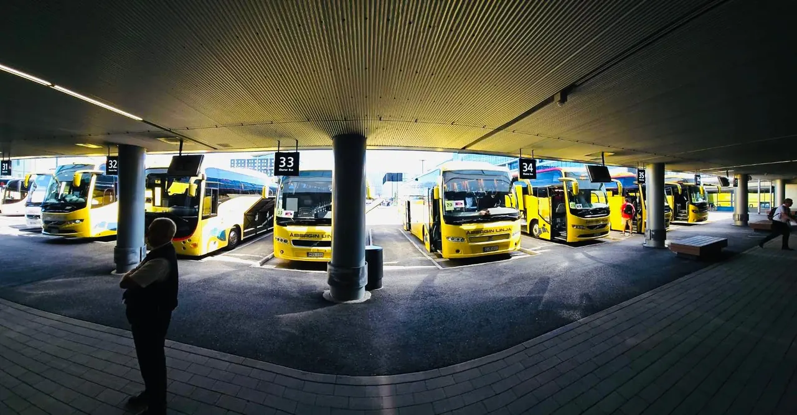


Nuorten EM-kisat 2023: lähes 20 bussia
Tilausajot pikkubussista suurtapahtumiin
Espoolainen perheyhtiö vuodesta 1953. Noin 30 bussia, 9–60 paikkaa, yrityksille, tapahtumille, urheiluseuroille ja kouluille.
Tarjous jopa parissa toimistotunnissaToimisto arkisin 8–16
- 1953Liikenteessä vuodesta 1953, nyt kolmannen sukupolven perheyhtiö
- noin 30bussia ja 30–40 kuljettajaa sesongista riippuen
- 9–60paikkaiset bussit kaikkiin tarpeisiin
- 2030saakka voimassa HSL:n linjaliikenteen liikennöintisopimukset


Palvelut
Mihin tarvitsette bussia?
Bussit 9–60 matkustajalle sekä kaupunkibussit tapahtuma- ja esteettömiin kuljetuksiin.
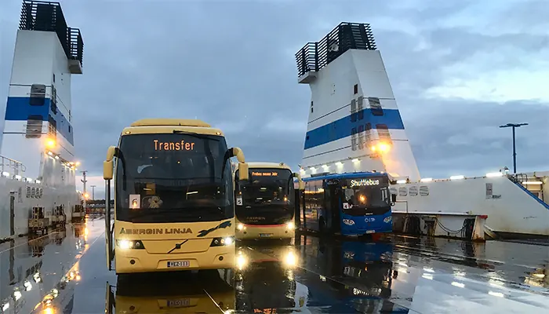
Tapahtumat ja shuttlet
Tapahtumakuljetukset, shuttlebussit ja esteettömät kuljetukset kaupunkibusseilla.
Lue lisää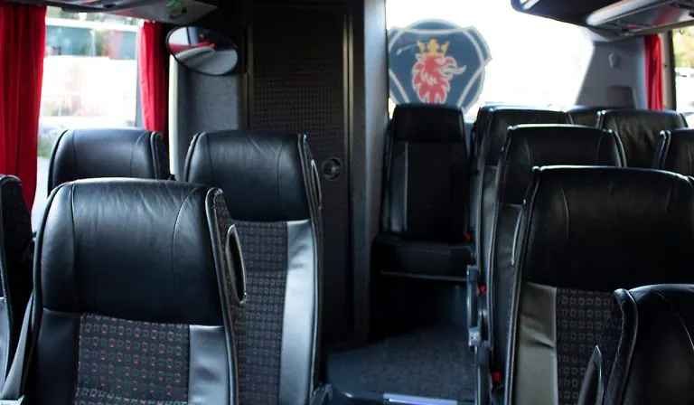
Yritykset ja kokoukset
Messukuljetus, kehittämispäivä, risteilymatka tai kokouspäivä: koko ryhmä liikkuu yhdessä samalla bussilla.
Lue lisää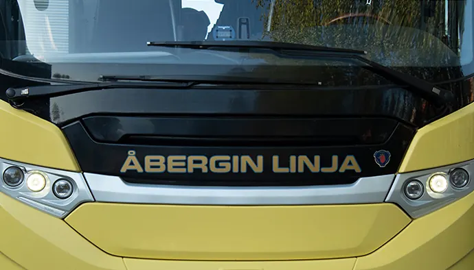
Lentokenttä- ja hotellikuljetukset
Hotelleilta tapahtumapaikalle tarkoin aikataulutettuina, ja lentokentältä myös silloin, kun lennot myöhästyvät.
Lue lisää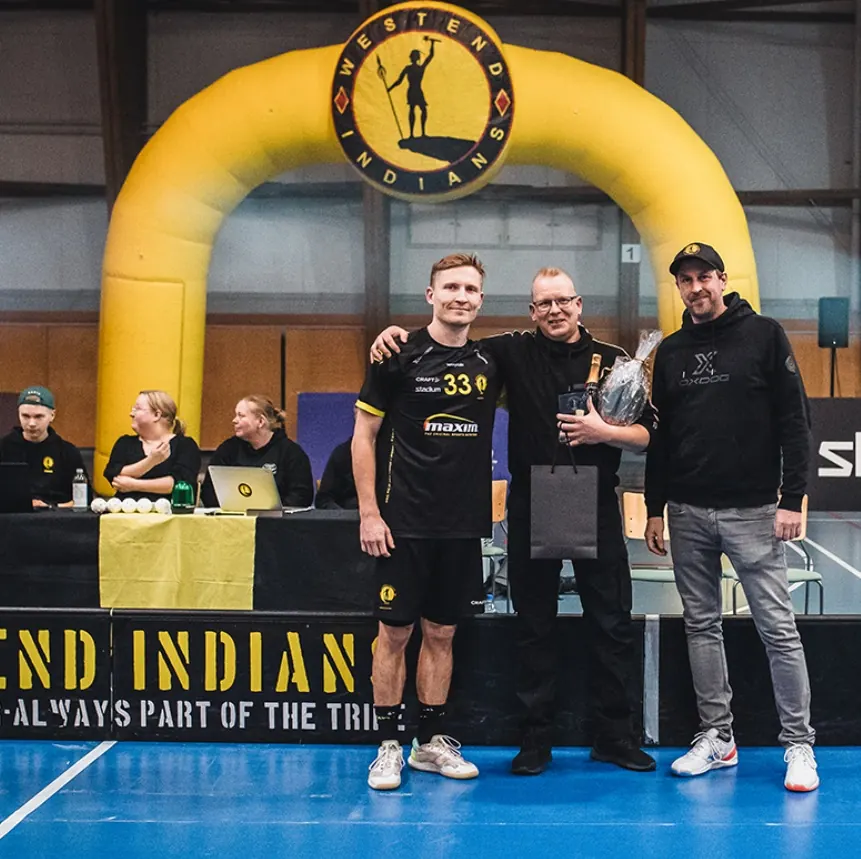
Urheiluseurat ja joukkueet
Westend Indians on käyttänyt Åbergin Linjan kuljetuspalveluita yli 20 vuotta.
Lue lisää
Koulukyydit ja luokkaretket
Lähes kaikissa busseissa on koulukyydeissä vaadittavat alkolukot sekä turvavyöt.
Lue lisää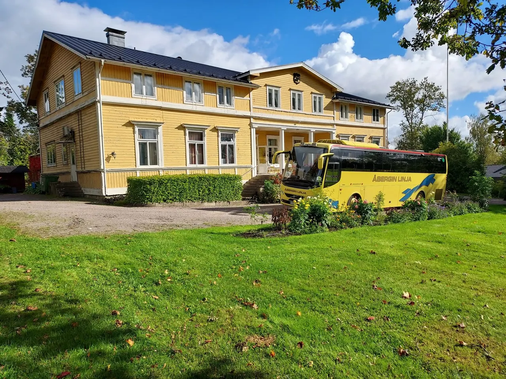
Häät, juhlat ja retket
Juhlavieraat kirkolta juhlapaikalle ovelta ovelle, ja juhlien jälkeen hotellille tai jatkopaikkaan.
Lue lisääAsiakkailta
Asiakkaat luottavat
Lähteet: Tilausajot.net-profiili ja Åbergin Linjan Facebook-sivu, luettu 10.11.2026.
Nuorten EM-kisoissa lentokenttäkuljetukset hoidettiin lähes 20 bussilla, myöhässä olevat lennot mukaan lukien.
Lue tarina Jartsi · Heimon luottokuljettaja18000kilometriä yhden kauden aikanaLuottokuljettaja Jarkko ”Jartsi” Nuora ajoi ensimmäiset Heimon reissunsa kaudella 2007–2008.
Lue tarina Fredi · Puna-Mustat13610turvallista kilometriä Fredin kyydissä kaudella 2026Puna-Mustat on reissannut kesän halki ja poikki Suomea luottokuski Fredin kyydillä, ja matka jatkuu Superpesiksessä.
Lue tarina Luontobussi · MetsähallitusNuuksioonluontobussilla Helsingin keskustastaKesällä 2021 Åbergin Linjan luontobussi liikennöi Kiasmalta Suomen luontokeskus Haltiaan.
Lue tarinaKalusto
Oikea bussi ryhmällenne
Volvon, Scanian ja Mercedeksen linja-autoja 9–60 matkustajalle.
Myynti valitsee ryhmällenne sopivan auton. Jos toivottu koko on varattu, tarjoamme vastaavan tai isomman.
Bussien varustetaso vaihtelee, joten varmistakaa omat tarpeenne tilauksen yhteydessä.
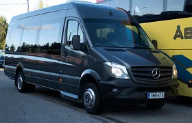
13–16paikkaaPikkubussi
Sopivin koko · 13–16 paikkaaPöytäryhmäIlmastointiJääkaappiBuscafeTurvavyöt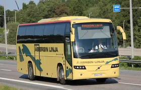
30–34paikkaa30–34-paikkainen
Sopivin koko · 30–34 paikkaaSohva- tai pöytäryhmäWCIlmastointiUSB/220VJääkaappiBuscafeTurvavyöt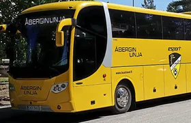
49paikkaaHonka-bussi
Sopivin koko · 49 paikkaaFC Honka -teippausMusta-keltainen sisustusWC3 pöytäryhmääIsot tavaratilat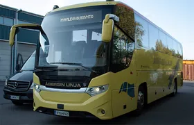
49–54paikkaa49–54-paikkainen
Sopivin koko · 49–54 paikkaaWCIlmastointiUSB/220VPöytäryhmäBuscafeTurvavyötWifi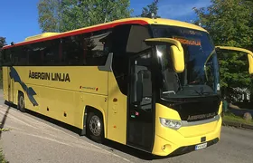
57–60paikkaaIso bussi
Sopivin koko · 57–60 paikkaaWCIlmastointiUSB/220VTurvavyöt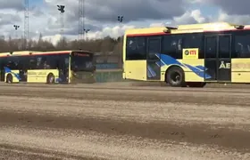
Kaupunkibussit
Tapahtumakuljetuksiin, shuttlebusseiksi ja liikuntaesteisille.
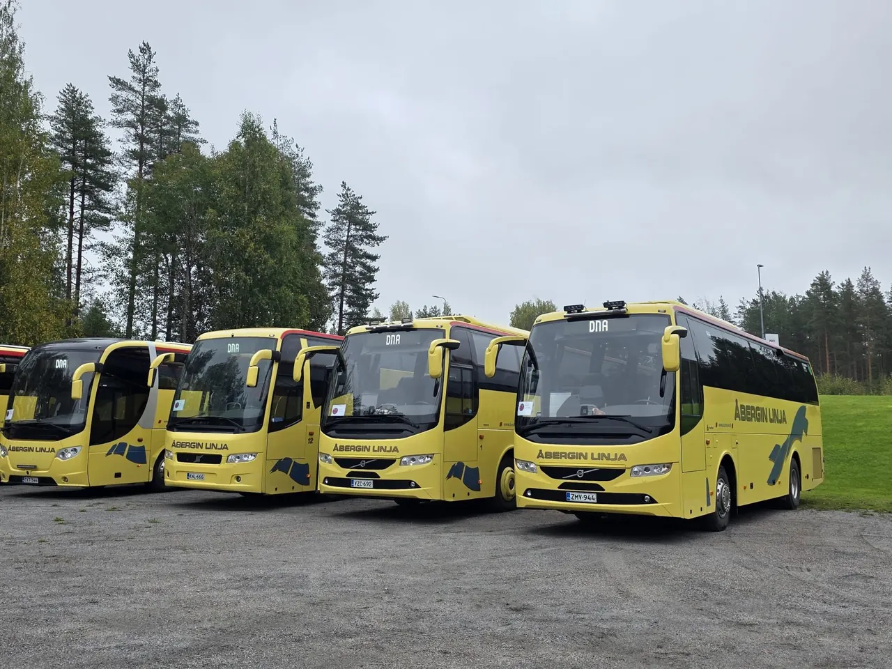
Hymyilevä Bussiyhtiö
Miksi Åbergin Linja
Bussimatka on aina kokemus, oli kyseessä lyhyt siirtokuljetus tai useamman päivän retki.
Useamman sadan henkilön kuljetukset
Omalla kalustolla samaan aikaan, ja yhteistyökumppaneiden avulla jopa tuhansien matkustajien.
Iloiset ja osaavat kuljettajat
Kuljettajia on sesongin mukaan 30–40, ja sopimusasiakkaat saavat tutut kuljettajat.
Oma varikko ja koulutuskeskus
Varikolta Espoosta hoidetaan pääkaupunkiseudun ja läntisen Uudenmaan liikenne, ja omassa koulutuskeskuksessa suoritetaan ammattipätevyyskoulutuksia.
Turvallisesti perille
Lähes kaikissa busseissa on koulukyydeissä vaadittavat alkolukot sekä turvavyöt.
Hinnat
Mitä tilausajo maksaa Helsingissä?
Hintaan vaikuttavat matkan pituus ja siihen käytetty aika, matkustajamäärä ja kuljetuksen ajankohta.
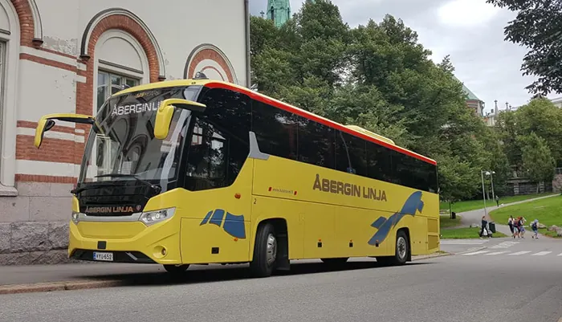
Lyhyt kuljetus pikkubussilla
alle 200 €Lyhyt kuljetus isolla bussilla
200–300 € alkaenMuutaman tunnin päiväretki Helsingissä
noin 350–500 €
Kysymykset
Usein kysyttyä
Tilausajomyynti, Petri Nissinen
040-539 4976Kiireellisissä tapauksissa tilausajopäivystys 0400-505 713.
Mitä tilausajo maksaa?
Lyhyt kuljetus pikkubussilla maksaa alle 200 euroa ja isolla bussilla 200–300 euroa alkaen. Muutaman tunnin päiväretki Helsingissä maksaa noin 350–500 euroa.
Kuinka iso ryhmä mahtuu kyytiin?
Busseissa on 9–60 paikkaa. Omalla kalustolla hoidetaan useamman sadan henkilön kuljetukset samaan aikaan, ja yhteistyökumppaneiden avulla jopa tuhansien.
Kuinka nopeasti saan tarjouksen?
Tarjouksen bussikuljetuksesta saa jopa parissa toimistotunnissa. Toimisto palvelee arkisin 8–16, ja tarjouspyynnön voi tehdä lomakkeella, sähköpostilla tai puhelimella.
Mitä sopimusasiakkuus tarkoittaa?
Kuljetussopimuksella saatte luotettavat hinnat, tutut kuljettajat, parhaat bussit, paremmat peruutusehdot ja matkojen suunnittelupalvelun.
Entä jos kuljetus tarvitaan kiireellisesti?
Tilausajopäivystys palvelee kiireellisissä tapauksissa numerossa 0400-505 713.
Millä alueella ajatte?
Tilausajobusseilla kuljetamme asiakkaat minne tahansa. Espoossa sijaitsevalta varikolta hoidetaan kätevästi pääkaupunkiseudun ja läntisen Uudenmaan liikennettä.
Kertokaa matka, me teemme tarjouksen
Tarjous jopa parissa toimistotunnissa. Toimisto palvelee arkisin 8–16 puhelimitse ja sähköpostitse.